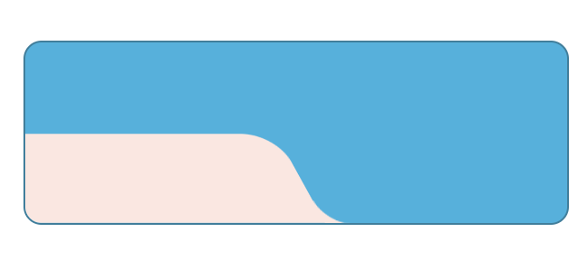
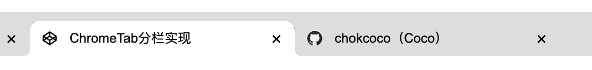
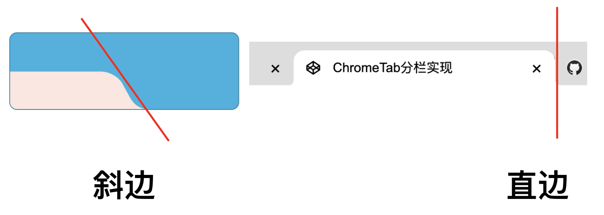
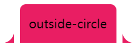
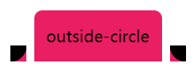
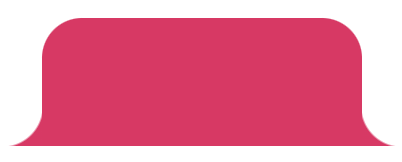
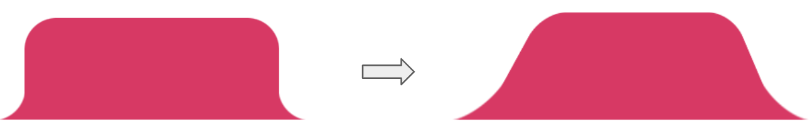
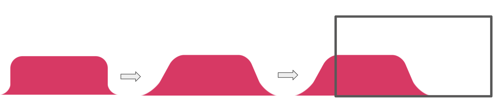
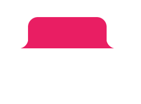
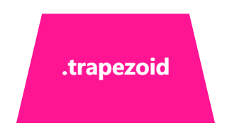

今天，有个群友在群里提问，使用 CSS 能否实现下述这个图形：

emmm，中间这个酷似三次贝塞尔曲线的造型，使用 CSS 不太好实现。我的建议是切图实现，然而群友要求一定要用 CSS 实现。
虽然麻烦，但是这个图形勉强也是能用 CSS 实现的。本文就将探讨一下上述图形的纯 CSS 实现方式，并且从中进行一定的扩展延伸。
尝试实现
这个图形其实与我们的 Chrome Tab 按钮非常类似，像是这样：

不一样之处在于，Chrome 的侧边其实是垂直的竖线，而上述的需求，侧边是一条斜线。

首先，我们快速看看这个 Chrome Tab 的交互应该如何实现：
我们对这个按钮形状拆解一下，这里其实是 3 块的叠加：

只需要想清楚如何实现两侧的弧形三角即可。这里还是借助了渐变 -- 径向渐变，其实他是这样，如下图所示，我们只需要把黑色部分替换为透明即可，使用两个伪元素即可：

代码如下：
<div class="outside-circle"></div>
.outside-circle {
position: relative;
background: #e91e63;
border-radius: 10px 10px 0 0;
&::before {
content: "";
position: absolute;
width: 20px;
height: 20px;
left: -20px;
bottom: 0;
background: #000;
background: radial-gradient(circle at 0 0, transparent 20px, #e91e63 21px);
}
&::after {
content: "";
position: absolute;
width: 20px;
height: 20px;
right: -20px;
bottom: 0;
background: #000;
background: radial-gradient(
circle at 100% 0,
transparent 20px,
#e91e63 21px
);
}
}
即可得到：

上述的所有图形的完整代码，你可以在这里看到：CodePen Demo -- CSS Various Button Shapes | CSS 各种造型按钮
那么，问题来了，我们有没有办法，通过上述图形，得到侧边两条线是斜线的效果呢？

有了右边的图形，想要得到我们最终的效果不就手到擒来了么？像是这样：

那么，怎么实现呢？其实也非常好做，这里利用了 CSS 3D 旋转，形成了一种视觉上的景深效果，来实现侧边由竖直到斜边的转化。
看看代码，其实就两行代码，在上述 outside-circle 的图形基础上：
- 设置一个适当的 perspective 值
- 设置一个恰当的旋转圆心 transform-origin
- 绕 X 轴进行旋转
代码非常简单，我们其实只需要这样：
.outside-circle {
position: relative;
background: #e91e63;
border-radius: 10px 10px 0 0;
transform: perspective(40px) rotateX(20deg);
transform-origin: 50% 100%;
&::before {
...;
}
&::after {
...;
}
}
核心在于这两句：
- transform: perspective(40px) rotateX(20deg)
- transform-origin: 50% 100%
制作一个动画，会更好理解一点：

是的，再复述一次，这里利用了 CSS 3D 旋转，形成了一种视觉上的景深效果，来实现侧边由竖直到斜边的转化。
利用这个技巧实现梯形
通常，我们可以利用这个技巧，制作梯形，像是这样：
.trapezoid {
position: relative;
width: 160px;
padding: 60px;
}
.trapezoid:before {
content: "";
position: absolute;
top: 0;
right: 0;
bottom: 0;
left: 0;
transform: perspective(40px) scaleY(1.3) rotateX(5deg);
transform-origin: bottom;
background: deeppink;
}
效果如下：

还原题图效果
好，理解了之后，还原题图效果就很简单了。我们只需要实现一边的效果，再将整个图形左移，利用父容器的 overflow: hidden 裁剪掉左边部分，保留右边即可。
完整的代码如下：
<div class="g-container">
<div class="g-inner"></div>
</div>
.g-container {
position: relative;
width: 300px;
height: 100px;
background: #2cb2e0;
border: 1px solid #277f9e;
border-radius: 10px;
overflow: hidden;
}
.g-inner {
position: absolute;
width: 150px;
height: 50px;
background: #fee6e0;
bottom: 0;
border-radius: 0 20px 0 20px;
transform: perspective(40px) scaleX(1.4) scaleY(1.5) rotateX(20deg) translate(-10px, 0);
transform-origin: 50% 100%;
&::before {
content: "";
position: absolute;
right: -10px;
width: 10px;
height: 10px;
background: inherit;
mask: radial-gradient(
circle at 100% 0,
transparent,
transparent 9.5px,
#000 10px,
#000
);
}
}
这样，我们就完美的实现了题目的效果：
完整的在线示意，戳这里：CodePen Demo -- Unregular Border